Home lifts家用电梯
Compact, quiet and energy-efficient lifts for landed houses, with automatic doors and interiors made to match the home.为有地住宅打造紧凑、静音、节能的电梯，配有自动门，内装与家居相配。
Home lifts家用电梯
Eletec designs, installs and services lifts in Singapore: bespoke home lifts, glass and circular lifts, and passenger and cargo lifts for buildings. Since 2004.Eletec 在新加坡设计、安装和保养电梯：定制家用电梯、玻璃及圆形电梯，以及楼宇客梯和货梯。始于2004年。
Hydraulic circular lift, landed house液压圆形电梯，有地住宅
One company for the whole life of a lift: supply, installation, servicing, the annual PTO test, and the upgrade years later.电梯的一生，一家公司全程负责：供应、安装、保养、年度 PTO 检测，以及多年后的翻新。
A hydraulic circular lift with curved glass, rising through the centre of a spiral staircase. We plan the shaft, the doors and the finishes around the house, not the other way round.一部弧形玻璃的液压圆形电梯，从旋转楼梯中央升起。井道、梯门和饰面都依房屋来规划，而不是让房屋迁就电梯。


Compact, quiet and energy-efficient lifts for landed houses, with automatic doors and interiors made to match the home.为有地住宅打造紧凑、静音、节能的电梯，配有自动门，内装与家居相配。
Home lifts家用电梯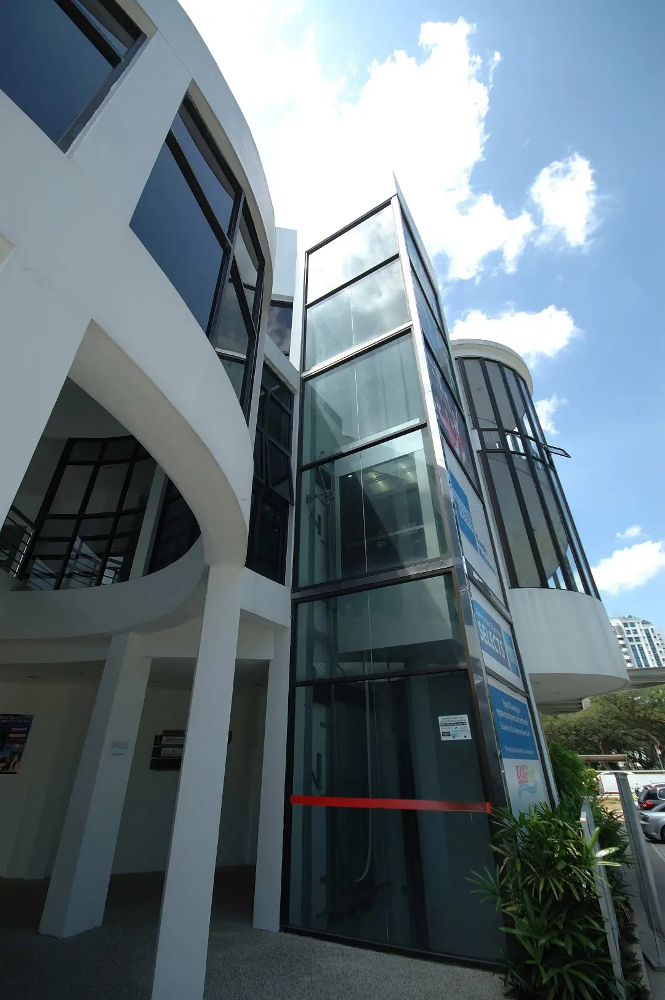
Panoramic lifts in glass shafts, inside or outside the building, with Fermator glass doors.玻璃井道观光电梯，可装在室内或室外，配 Fermator 玻璃门。
Glass lifts玻璃电梯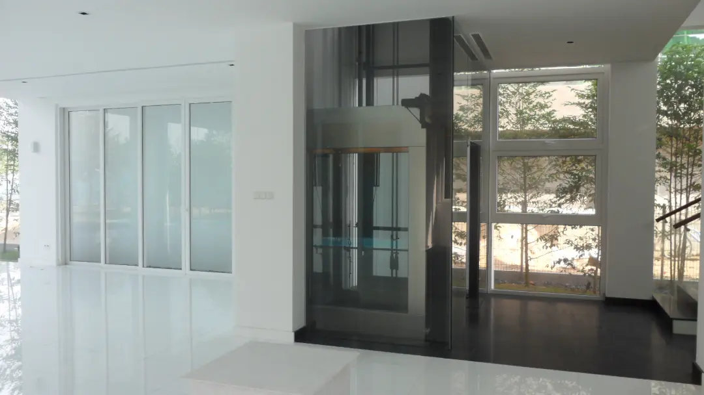
Elderly-friendly lifts that let parents stay on every floor of the family home, with wide doors and simple controls.长者友善电梯，门宽、操作简单，让父母在家中每一层都住得安心。
Elderly-friendly lifts长者友善电梯
Passenger lifts for offices, shops and hotels. Cargo lifts for warehouses, industry, data centres and healthcare. Car lifts too.客梯适用于办公楼、商店和酒店；货梯适用于仓库、工业、数据中心和医疗机构。也提供汽车升降机。
Commercial and cargo商用与货运Each line is configured for the house it goes into. Ask us for the details of any line.每个系列都会按房屋配置。如需了解任何系列的详情，欢迎询问。 Line details to be added系列详情待补充
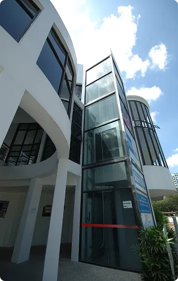
AetherLift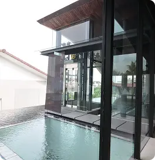
AquaLift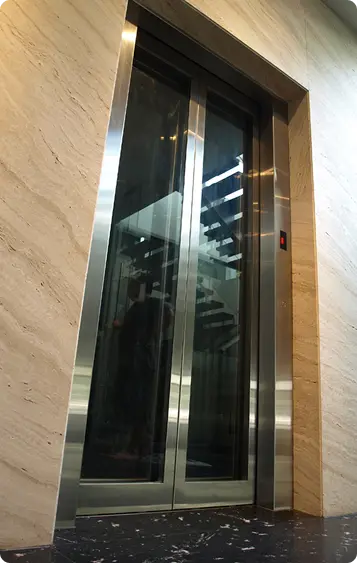
ArborLift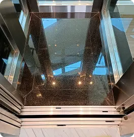
CrystalLift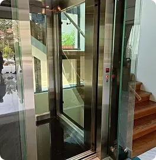
LuxeLift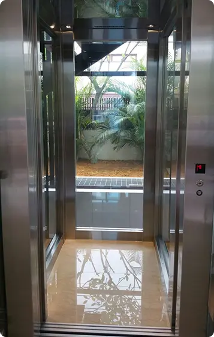
NexaLift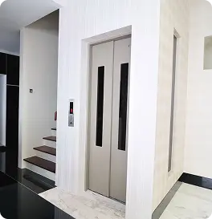
PrestigeLift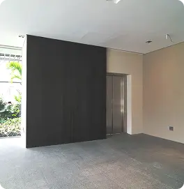
PrimeLift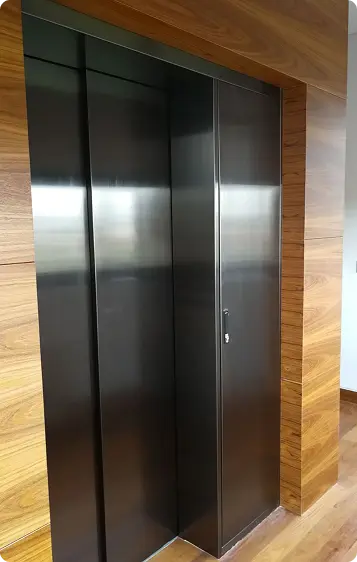
TimberAscendWe service lifts of any brand, not only the ones we install, and we keep them ready for the annual Permit to Operate test.我们保养各品牌电梯，不只限于我们安装的，并帮您做好年度运行许可证（PTO）检测的准备。
Call us any time, day or night.无论白天黑夜，随时来电。
Call 6746 2908致电 6746 2908Scheduled servicing, preventive inspections and repairs.定期保养、预防性检查和维修。
We prepare the lift and support the yearly test for its Permit to Operate.我们为电梯做好准备，并协助每年的运行许可证检测。
Upgrading of old lifts, so they run smoother and safer.为旧电梯翻新升级，运行更平稳、更安全。
Breakdowns and people trapped in a lift, any hour.电梯故障或困人，任何时候都可来电。
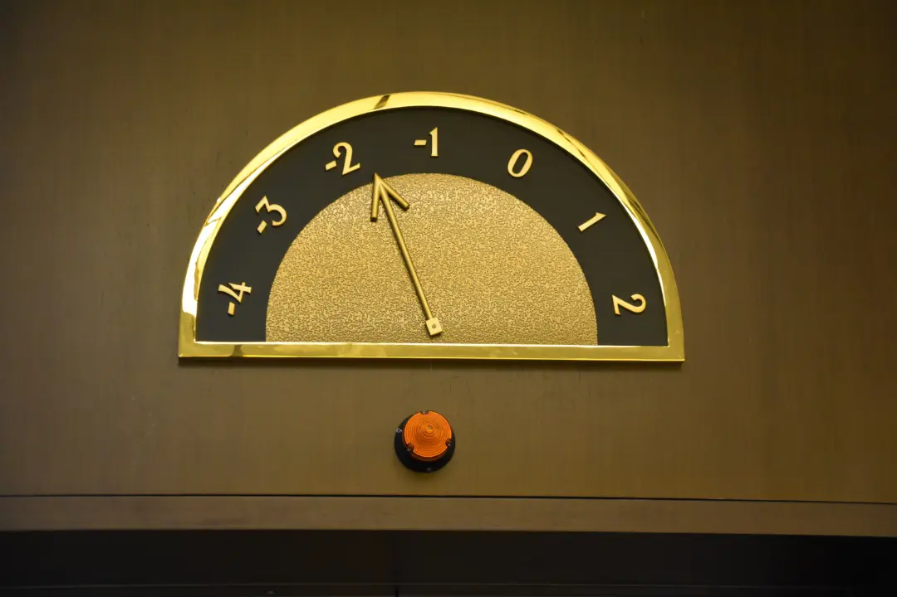
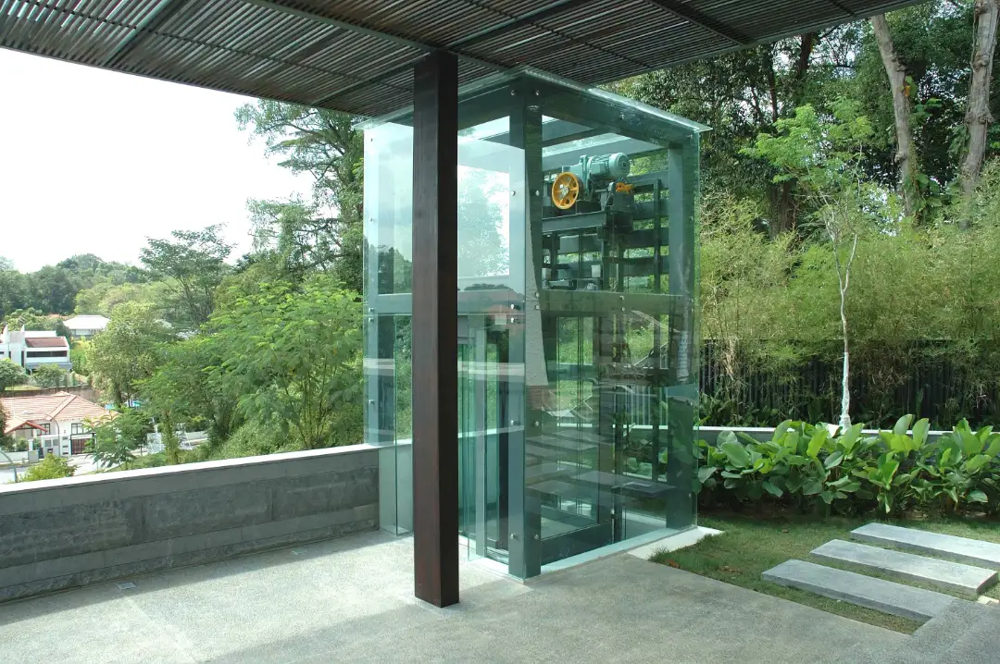
A garden lift in a glass shaft, with the machinery left on view.花园中的玻璃井道电梯，机械结构一览无遗。